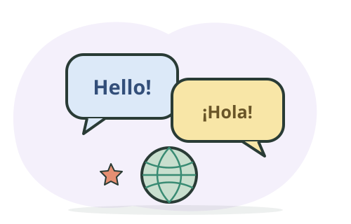

Escucha y repite
Elige un audio breve en inglés, anota tres palabras nuevas y repite una frase tratando de imitar su pronunciación.
10 minutosRelaciona palabras útiles para estudiar y explorar tu futuro.

Elige la traducción correcta:
goalSelecciona una opción.
Practica en voz alta: di la palabra en inglés y úsala en una frase corta.
Busca términos en español o inglés entre más de 3.700 entradas del diccionario. El diccionario local funciona sin internet; las frases nuevas se traducen con MyMemory.
Cargando diccionario local…
Fuente: Diccionario de Términos de Salud: Español–Inglés, 4.ª edición (2012), Iniciativa de Salud de las Américas, UC Berkeley; UC Regents y Departamento de Salud Pública de California. La publicación permite reproducir el material citando la fuente (p. 4). El vocabulario complementario fue elaborado para esta plataforma. Las traducciones automáticas pueden requerir revisión.
Busca por tema en inglés o español. Si eliges español, MyMemory traducirá la consulta al inglés antes de buscar frases.
Elige un tema y pulsa “Buscar frases”.
Las traducciones de Tatoeba aparecen cuando existen; MyMemory traduce las frases restantes. La traducción automática puede requerir revisión. Sin internet, hay ejemplos guardados.
Cada día hay un tema distinto y tres retos breves. Lean la regla, conversen en grupo y expliquen por qué eligen cada respuesta.
Combina escucha, lectura, escritura y conversación a tu ritmo.
Elige un audio breve en inglés, anota tres palabras nuevas y repite una frase tratando de imitar su pronunciación.
10 minutosEncuentra actividades de comprensión, escritura, escucha y conversación organizadas por nivel.
British Council · habilidades ↗Guarda palabra, significado, una frase propia y la fecha. Al final de la semana, tapa la traducción e intenta recordarla.
Actividad · semanalMaterial de YouTube sobre inglés y gramática.
Cargando videos del módulo…
Los resultados vienen de YouTube. El docente debe revisar cada video antes de proyectarlo en el salón.